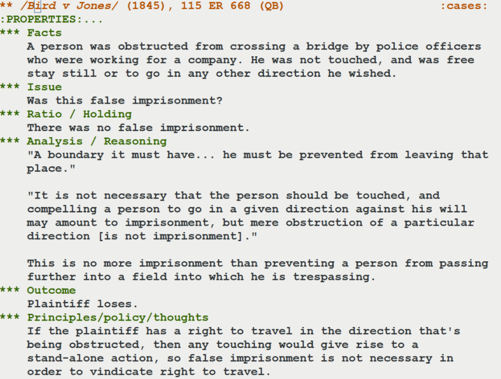
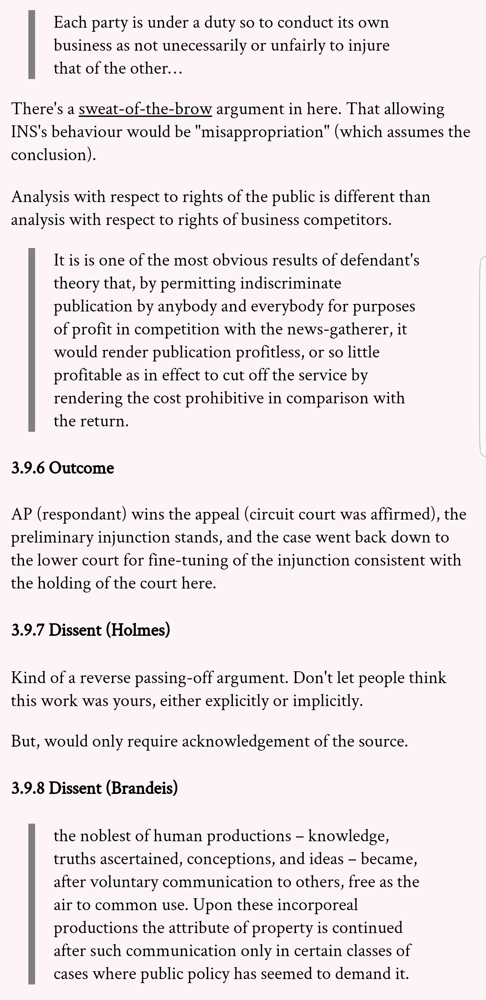

One month in
One month into law school, and I feel a little like Neo after being jacked into the information pipe. But, as you might remember from the next scene, he was far from ready for the Matrix. That’s the level that we’re learning things at right now—a basic literacy of broad areas of law, so we will know how to understand new cases, what questions to ask, and what arguments are valid. I also feel quite unprepared to apply anything just yet. Maybe it will always feel like this!
The most common question I’m asked is: “How has your first month been?” I keep saying that it’s been manageable. It’s also been stressful. It’s also been really good.
I think the stress has more to do with the stress inherent in any change rather than due to something specific to law school. This new thing I’m doing is displacing some old things: no more Overwatch, no more Hearthstone, less reading for pure leisure, no binge-watching The Office. It’s also super engaging and stimulating. So, when I wake up in the middle of the night, instead of falling right back to sleep, my mind jumps to a topic we’ve been talking about in class or to a reading I just completed. I also moved to a new apartment at the beginning of October—another change and more work that I had to fit everything else around.
The second-most common question I’m asked is (from people around me in class): “What are you using to take your notes?”
I’ve been using org-mode to take class notes and I like how that’s been working. In case you haven’t heard of org-mode before, it’s built in to a plain-text editor called emacs and it looks like this:

Things I like about taking notes in org-mode:
- The automatic indentation, lists, and collapsible sections
- Tags, although I’m barely using them right now
- Super simple markup for marking things italic or underlined or for making block quotations
And, I’ve set up my org-mode system to automatically export the notes to an html file that’s saved to Google Drive. That lets me review all of my notes on my phone on a nice-to-read web page.

The third-most frequent thing I’m asked is: “Why did you come to law school? How are you going to use your computer science background?”
At the outset, I’m interested in civil liberties, public-interest law generally, defendant rights, and copyright. I’m not sure whether I’ll use my computer science background (other than tangentially, like my note-taking system, or factum-authoring tool), but there are some topics where my interests seem to intersect. I’ve thought about some of these more than others, but here are a few examples: copyright in AI-generated art, protections against search and seizure of digital and network evidence, anonymity and privacy rights in general, algorithmic decision-making in law, and copyright/fair use of code, APIs, and program outputs. These are not things that I’ll get to think a lot about in first year, but I’m enjoying the foundational topics that we’re focusing on in the meantime. They’re certainly complex and interesting enough.
Favourite things from each class
- Legal research and writing: Getting access to really good case-law research databases. WestlawNext 👍. Lexis Advance Quicklaw 👎. And CanLII is actually a pretty good free database.
- Public law: Legislative research and statutory interpretation. So fun to think about words and meaning.
- Contracts: Thinking about the balance between formality, giving effect to intent, and protection of weaker parties.
- Criminal law: Causation. Someone did a thing. Later on, a bad result happened. Is the person’s action sufficiently connected with the result to warrant punishment?
- Federalism: That in determining whether the federal (or provincial) government has the power to make a particular law, there is a well defined series of questions that you need to work through, yet in answering those questions, there’s much room for legal realism (in the sense that that term is used here).
- Property law: Public property and how it relates to homelessness and tent communities.,, Also, the economic analysis of law that is so prominent in property law today.
- Torts: Implied consent to battery in sports settings. What harms are really just part of the game?
Some of my favourite readings brought to me by school so far
- RH Coase, “The Problem of Social Cost” (1960) 3 Law and Economics 1.
- Aaron Mills, “The Lifeworlds of Law: On Revitalizing Indigenous Orders Today” (2016) 61:4 McGill Law Journal 847.
- The dissent here, which reads like something by Lovecraft. Edwards v Sims, 232 Ky 791 (CA 1929), Logan J, dissenting.
- Jeremy Waldron, “Homelessness and the Issue of Freedom” (1991) 39 UCLA Law Review 295.
What I’m looking forward to
- McSweeney’s 54: “a collection of essays and interviews focusing on issues related to technology and privacy compiled with the help of the Electronic Frontier Foundation.”
Miscellany
- One of the patents I worked on got issued! (US Patent 9,977,955) This actually happened back in May, but I just found out about it. I’m one of the inventors and I helped to draft the specification.
- I joined Pro Bono Students Canada and will be spending a few hours each week helping a Vancouver-based public-interest organization.
- I am still working on a factum-authoring system. As an author, you would use a slight variant of Markdown (very close to plain text) and would need to create a bibliography file. My program would then automate the citation layout, paragraph notes, back-references, the table of authority, and all things related to formatting. In case you’re familiar with LaTeX and think it might already do this, it doesn’t. It needs to be coerced. The per-paragraph notes for BC factums are not supported in LaTex and it is hard to get BibTex or Biber to work with legal citations. This is my hobby programming project right now.
Notes
1. ↑ This isn’t a Canadian case, but it is a good example of the kinds of questions that arise in statutory interpretation. Yates v United States, 135 S Ct 1074 (2014). Is a fish a tangible object?
2. ↑ Cassidy Gale, “Summary of Victoria (City) v Adams”, CanLII Connects (20 November 2014).
3. ↑ Victoria (City) v Adams, 2009 BCCA 563.
4. ↑ This argument is still playing out in cities around North America. See Martin v City of Boise, No 15-35845 (9th Cir 2018). This is almost the exact situation as in Victoria (City) v Adams: there are more homeless people than shelter spaces, but sleeping outdoors on public property is illegal. Sleeping would be illegal for at least some of those without private space. The challenge to the law was successful.
5. ↑ Michael McCann, “A Look at the Possible Consequences of Brad Marchand’s Tactic of Licking Opponents”, Sports Illustrated (6 May 2018).